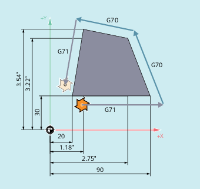

Using the commands of G group 13 (inch/metric system of units) within a part program, you can switch over between the metric and inch system of units.
In order that commands G700 and G710 are available, the extended system of units functionality must be switched on (MD10260 $MN_CONVERT_SCALING_SYSTEM = 1).
| Activating the inch system of units The inch system of units is used to read and write geometrical data in units of length. Technological data in units of length (e.g. feedrates, tool offsets, adjustable work offsets, machine data and system variables) is read and written using the parameterized basic system. | |
G group: | 13 | |
Initial setting: | Settable via MD20150 $MC_GCODE_RESET_VALUES | |
Effectiveness: | Modal | |
| Activating the metric system of units The metric system of units is used to read and write geometrical data in units of length. Technological data in units of length (e.g. feedrates, tool offsets, adjustable work offsets, machine data and system variables) is read and written using the parameterized basic system. | |
G group: | 13 | |
Initial setting: | Settable via MD20150 $MC_GCODE_RESET_VALUES | |
Effectiveness: | Modal | |
| Activating the inch system of units All geometrical and technological data in units of length is read and written using the inch system of units. | |
G group: | 13 | |
Initial setting: | Settable via MD20150 $MC_GCODE_RESET_VALUES | |
Effectiveness: | Modal | |
| Activating the metric system of units All geometrical and technological data in units of length is read and written using the metric system of units. | |
G group: | 13 | |
Initial setting: | Settable via MD20150 $MC_GCODE_RESET_VALUES | |
Effectiveness: | Modal | |
| Notice |
Axis-specific data of rotary axesAxis-specific data of rotary axes is read and written using the parameterized basic system. |
The basic system is metric (MD10240 $MN_SCALING_SYSTEM_IS_METRIC = 1). However, the workpiece drawing has dimensions shown in inches. This is the reason why within the part program, the inch system of units is selected. After the inch dimensions have been processed, the metric system of units is again selected.
| Program code | Comment |
|---|---|
| N10 G0 G90 X20 Y30 Z2 S2000 M3 T1 | ; X=20 mm, Y=30 mm, Z=2 mm, F=rapid traverse mm/min |
| N20 G1 Z-5 F500 | ; Z=-5 mm, F=500 mm/min |
| N30 X90 | ; X=90 mm |
| N40 G70 X2.75 Y3.22 | ; programmed system of units: inch |
| ; X=2.75 inch, Y=3.22 inch, F=500 mm/min | |
| N50 X1.18 Y3.54 | ; X=1.18 inch, Y=3.54 inch, F=500 mm/min |
| N60 G71 X20 Y30 | ; programmed system of units: Metric |
| ; X=20 mm, Y=30 mm, F=500 mm/min | |
| N70 G0 Z2 | ; Z=2 mm, F=rapid traverse mm/min |
| N80 M30 | ; end of program |
See also:
Metric/inch dimension system (G70/G71, G700/G710) Further information